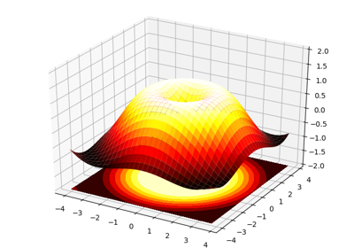
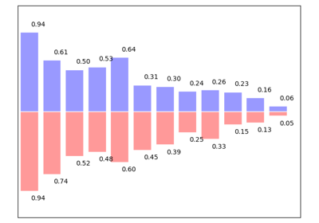
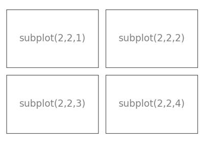
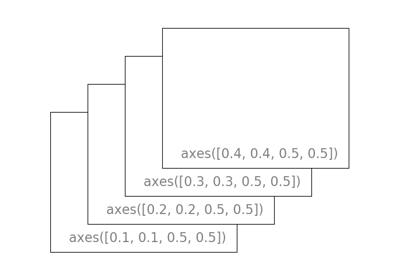

Code samples for Matplotlib¶
The examples here are only examples relevant to the points raised in this chapter. The matplotlib documentation comes with a much more exhaustive gallery.








The examples here are only examples relevant to the points raised in this chapter. The matplotlib documentation comes with a much more exhaustive gallery.